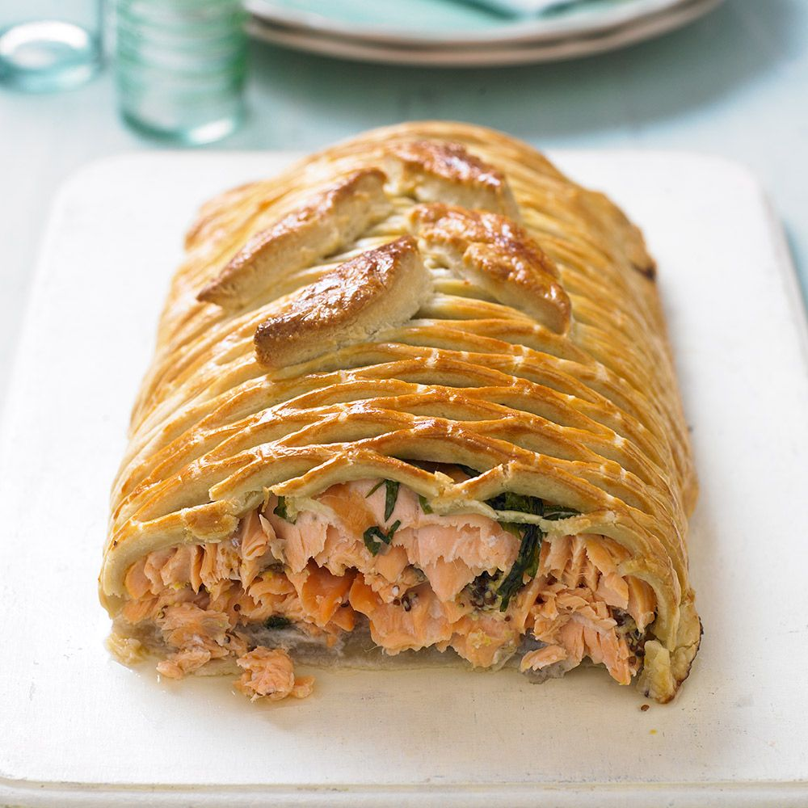

Salmon en croute
Take salmon en croûte to chef standard. Succulent salmon,
cream cheese and dill are encased in crisp puff pastry
with a pickled cucumber side

Ingredients
- For the cure
- 50g flaky sea salt
- 25g demerara sugar
- 2 x 500g skinless, boneless salmon fillets
- For the en croûte
- 75g watercress, chopped
- 200g cream cheese
- 2 tbsp fresh dill sprigs, chopped
- 1 lemon, zested and juiced
- pinch smoked salt (optional)
- 500g block all-butter puff pastry
- flour, for dusting
- 2 eggs, yolks only, beaten
- For the pickle (optional)
- 1 cucumber, peeled, halved, deseeded and sliced
- 1 red onion, finely sliced
- 100ml cider vinegar
- 1 tbsp sugar
Steps
- The day before you want to assemble the en croute, mix the salt and sugar in a bowl.
Scatter half of the mix over a tray, then lay one of the salmon fillets on top,
skinned-side down, and scatter with more of the salt mix. Lay the second fillet on top,
skinned-side up, and sprinkle over the rest of the salt mix. Cover, then place another
tray on top. Weigh the tray down with a couple of tins and put in the fridge for up to
48 hrs, or for at least 12 hrs (the longer you leave it, the firmer the salmon will be)
-
When you are ready to assemble the en croute, unwrap the salmon fillets, rinse them in cold
water and dry with kitchen paper, then set aside. Put the watercress, cream cheese, dill,
lemon zest and juice, smoked salt (if using) and a generous grinding of pepper into a bowl
and mix well, then set aside.
-
Line a baking tray with parchment. Roll out half of the pastry on a lightly floured surface so
its 2.5cm larger in diameter than the salmon fillet, then drape it over the lined baking tray.
Place one of the fillets on the pastry, skinned-side down, and spread with the cream cheese mix,
then lay the second fillet on top, skinned-side up. Brush the edge of the pastry with a little
of the beaten yolk. Roll out the rest of the pastry to fit, then drape it over the salmon and
tuck it in at the sides. Trim the edges and crimp or press with a fork to seal. Brush with
more beaten yolk, then put the en croute in the fridge for 30 mins before using a spoon to
create a scale-like effect along the top of the pastry. Chill for up to 24 hrs or for at
least another 30 mins.
-
Heat oven to 220C/200C fan/gas 7. Bake for 20 mins, then glaze with the remaining yolk. Lower
the heat to 180C/160C fan/gas 4 and bake for 20 mins more, then remove and leave to stand for
10 mins.
-
To make the pickle, put the cucumber and onion in a bowl. Tip the vinegar, sugar and a pinch of
salt into a pan and bring to the boil. Once the sugar has dissolved, pour over the veg, toss
well and set aside. Can be made up to two days ahead and kept in the fridge. Slice the en
croute into six portions and serve with the pickled veg on the side.